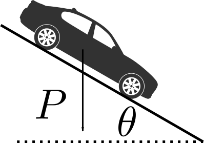

NMA380 - Dinâmica Veicular
Dinâmica longitudinal
Desempenho em rampa
Objetivos
- Partida em rampa (Startability)
- Qual é a inclinação máxima da pista que o veículo é capaz de iniciar o movimento a partir do repouso?
- Capacidade máxima de subida (Gradeability)
- Qual é a inclinação máxima da pista que o veículo é capaz de sustentar uma velocidade constante?
- Foco: Traction-limited gradeability
TEOREMA DO MOVIMENTO DO BARICENTRO (TMB)
O centro de massa de qualquer sistema move-se como se fosse um ponto material, de massa igual à massa total do sistema, sujeito à força resultante.
\(m \vec{a} = \sum_{i=1}^{n} \vec{F}_i = \vec{F}_{RES}\)
\(m a_x = \sum F_x\)
\(m a_y = \sum F_y\)
\(m a_z = \sum F_z\)
Fonte: FRANÇA, L. N. F.; MATSUMURA, A. Z.; Mecânica geral. 3. ed / 2011. (Cap. 10)
Exercício 1 (Revisão)
Conforme ilustrado na figura abaixo, uma caixa de 50 kg é puxada com uma força \(P\)=400 N que faz um ângulo de 30 graus com a horizontal. O coeficiente de atrito entre a caixa e o chão é \(\mu\)=0,3. Determine:
- a força normal sobre a caixa;
- a aceleração da caixa;
Fonte: HIBBELER, R. C.; Dinâmica: mecânica para engenharia. 12. ed. / 2011. (Exemplo 13.1)
TEOREMA DO MOMENTO ANGULAR (TMA)
A versão simplificada do TMA é capaz de descrever o movimento de rotação de um corpo rígido em torno de um eixo fixo.
\( \mathbf{I}_O \vec{\alpha} = \sum_{i=1}^{n} \vec{M}^i_O = \vec{M}^{RES}_O\)

\( I_{x} \alpha_x = \sum M_x\)
\( I_{y} \alpha_y = \sum M_y\)
\( I_{z} \alpha_z = \sum M_z\)
Fonte: FRANÇA, L. N. F.; MATSUMURA, A. Z.; Mecânica geral. 3. ed / 2011. (Cap. 12)
Exercício 2 (Revisão)
Conforme ilustrado na figura abaixo, considere um disco homogêneo de massa 15 kg e raio 0,5. Uma força \(T\)=180 N puxa a corda que está enrolada no disco. Determine:
- o momento em relação a G gerado pela força \(T\);
- a aceleração angular do disco;
Fonte: BEER, F. P.; JOHNSTON, E. R.; Mecânica vetorial para engenheiros. 5. ed / 1991. (Problema resolvido 16.4)
SAE Vehicle Axis System
- x - Longitudinal (para frente)
- y - Lateral (para a direita)
- z - Vertical (para baixo)
- p - Rolagem (em torno de x)
- q - Arfagem (em torno de y)
- r - Guinada (em torno de z)
TMB e TMA no sistema do carro
\(m a_x = \sum F_x\)
\(m a_y = \sum F_y\)
\(m a_z = \sum F_z\)
\( I_{x} \alpha_x = \sum M_x\)
\( I_{y} \alpha_y = \sum M_y\)
\( I_{z} \alpha_z = \sum M_z\)
Exercício 3
Considere os três cenários abaixo e determine:
- Equação de movimento na direção longitudinal.
- Velocidade em função do tempo.

Diagrama de corpo livre de um carro convencional

TMA: Carro convencional
Em relação ao ponto A:
\(W_{f} L+D_{A} h_{a}+\frac{W}{g} a_{x} h+R_{h x} h_{h}+R_{h z} d_{h}+W h \sin \Theta-W c \cos \Theta=0\)
Em relação ao ponto B:
\(-W_{r} L + D_{a} h_{a} + \frac{W}{g} a_{x} h +R_{h x} h_{h}+R_{h z}\left(d_{h}+L\right) + W h \sin \Theta + W b \cos \Theta = 0 \)
Carga sobre os eixos
\(W_{f} L+D_{A} h_{a}+\frac{W}{g} a_{x} h+R_{h x} h_{h}+R_{h z} d_{h}+W h \sin \Theta-W c \cos \Theta=0\)
\(-W_{r} L + D_{a} h_{a} + \frac{W}{g} a_{x} h +R_{h x} h_{h}+R_{h z}\left(d_{h}+L\right) + W h \sin \Theta + W b \cos \Theta = 0 \)
Sobre o eixo dianteiro:
\(W_{f}=\left(W c \cos \Theta-R_{h x} h_{h}-R_{h z} d_{h}-\frac{W}{g} a_{x} h-D_{A} h_{a}-W h \sin \Theta\right) / L\)
Sobre o eixo traseiro:
\(W_{r}=\left(W b \cos \Theta+R_{h x} h_{h}+R_{h z}\left(d_{h}+L\right)+\frac{W}{g} a_{x} h+D_{a} h_{a}+W h \sin \Theta\right) / L\)
Exercício 4
\(W_{f}=\left(W c \cos \Theta-R_{h x} h_{h}-R_{h z} d_{h}-\frac{W}{g} a_{x} h-D_{A} h_{a}-W h \sin \Theta\right) / L\)
\(W_{r}=\left(W b \cos \Theta+R_{h x} h_{h}+R_{h z}\left(d_{h}+L\right)+\frac{W}{g} a_{x} h+D_{a} h_{a}+W h \sin \Theta\right) / L\)
- Qual é a carga [N] sobre cada eixo quando o carro está parado sobre uma pista de inclinação zero?
\(W_{f s}=W \frac{c}{L}\)
\(W_{r s}=W \frac{b}{L}\)
Ford Escort XR3: \(m\) = 1145 kg, \(L\) = 2,532 m, \(b\) = 1,139 m, \(c\) = 1,393 m, \(g\) = 9,81 m/s2
Fonte: Automobile Catalog: 1993 Ford Escort XR3 2.0i (man. 5)
Exercício 5
\(W_{f}=\left(W c \cos \Theta-R_{h x} h_{h}-R_{h z} d_{h}-\frac{W}{g} a_{x} h-D_{A} h_{a}-W h \sin \Theta\right) / L\)
\(W_{r}=\left(W b \cos \Theta+R_{h x} h_{h}+R_{h z}\left(d_{h}+L\right)+\frac{W}{g} a_{x} h+D_{a} h_{a}+W h \sin \Theta\right) / L\)
- Qual é a carga [N] sobre cada eixo quando o carro acelera (\(a_x\) = 2.0 m/s2) com baixa velocidade sobre uma pista de inclinação zero?
\(W_{f}=W\left(\frac{c}{L}-\frac{a_{x}}{g} \frac{h}{L}\right)=W_{f s}-W \frac{a_{x}}{g} \frac{h}{L}\)
\(W_{r}=W\left(\frac{b}{L}+\frac{a_{X}}{g} \frac{h}{L}\right)=W_{r s}+W \frac{a_{x}}{g} \frac{h}{L}\)
Ford Escort XR3: \(m\) = 1145 kg, \(L\) = 2,532 m, \(b\) = 1,139 m, \(c\) = 1,393 m, \(g\) = 9,81 m/s2, \(h\) = 0,5 m
Fonte: Automobile Catalog: 1993 Ford Escort XR3 2.0i (man. 5)
Exercício 6
\(W_{f}=\left(W c \cos \Theta-R_{h x} h_{h}-R_{h z} d_{h}-\frac{W}{g} a_{x} h-D_{A} h_{a}-W h \sin \Theta\right) / L\)
\(W_{r}=\left(W b \cos \Theta+R_{h x} h_{h}+R_{h z}\left(d_{h}+L\right)+\frac{W}{g} a_{x} h+D_{a} h_{a}+W h \sin \Theta\right) / L\)
- Qual é a carga [N] sobre cada eixo quando o carro esta parado numa rampa de inclinação \(\Theta\)=10%?
\(W_{f}=W\left(\frac{c}{L}-\frac{h}{L} \Theta\right)=W_{f s}-W \frac{h}{L} \Theta\)
\(W_{r}=W\left(\frac{b}{L}+\frac{h}{L} \Theta\right)=W_{r s}+W \frac{h}{L} \Theta\)
Ford Escort XR3: \(m\) = 1145 kg, \(L\) = 2,532 m, \(b\) = 1,139 m, \(c\) = 1,393 m, \(g\) = 9,81 m/s2, \(h\) = 0,5 m
Fonte: Automobile Catalog: 1993 Ford Escort XR3 2.0i (man. 5)
Startability
Startability é definido como a inclinação máxima que um veículo carregado é capaz de iniciar e sustentar o movimento numa determinada condição de aderência.
Gradeability
Gradeability é definido como a inclinação máxima que um veículo carregado é capaz de sustentar uma velocidade constante numa determinada condição de aderência
Diagrama de corpo livre de um carro com reboque
Diagrama de corpo livre:
Condições de tração
Tração dianteira
Front-wheel-drive (FWD)
Condição:
\(\left( W + W_b \right) \sin \Theta = F_{X f}= \mu W_f\)
Tração traseira
Rear-wheel-drive (RWD)
Condição:
\(\left( W + W_b \right) \sin \Theta = F_{X r}= \mu W_r\)
Tração nas quatro rodas
4-wheel-drive (4WD)
Condição:
\(\left( W + W_b \right) \sin \Theta = F_{X}= \mu W\)

TMB e TMA: Carro com reboque
Reboque
- TMA em relação ao eixo do reboque
- TMB na direção x
Carro
- TMA em relação ao eixo traseiro
- TMA em relação ao eixo dianteiro
Carga sobre os eixos
Sobre o eixo dianteiro:
\begin{eqnarray} W_f &=& W \frac{c}{L} \cos \Theta - W \frac{h_1}{L} \sin \Theta - W_{b} \frac{h_2}{L} \sin \Theta + \\ & & + W_{b} \frac{d}{L} \frac{h_3}{L_t} \sin \Theta - W_b \frac{d}{L} \frac{f}{L_t} \cos \Theta - W_b \frac{d}{L} \frac{h_2}{L_t} \sin \Theta \\ \end{eqnarray}
Sobre o eixo traseiro:
\begin{eqnarray} W_r &=& W \frac{b}{L} \cos \Theta + W \frac{h_1}{L} \sin \Theta + W_{b} \frac{h_2}{L} \sin \Theta + \\ & & + W_b \frac{f}{L} \frac{(L+d)}{L_t} \cos \Theta - W_{b} \frac{h_3}{L} \frac{(L+d)}{L_t} \sin \Theta + W_b \frac{h_2}{L} \frac{(L+d)}{L_t} \sin \Theta \\ \end{eqnarray}
Gradeability - FWD
Tração dianteira: Front-wheel-drive (FWD)
\begin{eqnarray} W_f &=& W \frac{c}{L} \cos \Theta - W \frac{h_1}{L} \sin \Theta - W_{b} \frac{h_2}{L} \sin \Theta + \\ & & + W_{b} \frac{d}{L} \frac{h_3}{L_t} \sin \Theta - W_b \frac{d}{L} \frac{f}{L_t} \cos \Theta - W_b \frac{d}{L} \frac{h_2}{L_t} \sin \Theta \\ W_r &=& W \frac{b}{L} \cos \Theta + W \frac{h_1}{L} \sin \Theta + W_{b} \frac{h_2}{L} \sin \Theta + \\ & & + W_b \frac{f}{L} \frac{(L+d)}{L_t} \cos \Theta - W_{b} \frac{h_3}{L} \frac{(L+d)}{L_t} \sin \Theta + W_b \frac{h_2}{L} \frac{(L+d)}{L_t} \sin \Theta \\ \end{eqnarray}
Condição: \(\left( W + W_b \right) \sin \Theta = F_{X f}= \mu W_f\)
\(\Theta = \mu \frac{\frac{c}{L}-\zeta \frac{d}{L} \frac{f}{L_{t}}}{1+\mu \frac{h_1}{L}+\zeta\left(1+\mu \frac{h_{2}}{L}+\mu \frac{d}{L} \frac{h_{2}-h_{3}}{L_{t}}\right)}\)
Onde: \(L = b + c \qquad L_t = e + f \qquad \zeta = W_b/W\)
Gradeability - RWD
Tração traseira: Rear-wheel-drive (RWD)
\begin{eqnarray} W_f &=& W \frac{c}{L} \cos \Theta - W \frac{h_1}{L} \sin \Theta - W_{b} \frac{h_2}{L} \sin \Theta + \\ & & + W_{b} \frac{d}{L} \frac{h_3}{L_t} \sin \Theta - W_b \frac{d}{L} \frac{f}{L_t} \cos \Theta - W_b \frac{d}{L} \frac{h_2}{L_t} \sin \Theta \\ W_r &=& W \frac{b}{L} \cos \Theta + W \frac{h_1}{L} \sin \Theta + W_{b} \frac{h_2}{L} \sin \Theta + \\ & & + W_b \frac{f}{L} \frac{(L+d)}{L_t} \cos \Theta - W_{b} \frac{h_3}{L} \frac{(L+d)}{L_t} \sin \Theta + W_b \frac{h_2}{L} \frac{(L+d)}{L_t} \sin \Theta \\ \end{eqnarray}
Condição: \(\left( W + W_b \right) \sin \Theta = F_{X r}= \mu W_r\)
\(\Theta=\mu \frac{\frac{b}{L}+\zeta \frac{(L+d)}{L} \frac{f}{L_{t}}}{1-\mu \frac{h_1}{L}+\zeta\left(1-\mu \frac{h_{2}}{L}-\mu \frac{(L+d)}{L} \frac{h_{2}-h_{3}}{L_{t}}\right)}\)
Onde: \(L = b + c \qquad L_t = e + f \qquad \zeta = W_b/W\)
Gradeability - 4WD
Tração nas quatro rodas: 4-wheel-drive (4WD)
\begin{eqnarray} W_f &=& W \frac{c}{L} \cos \Theta - W \frac{h_1}{L} \sin \Theta - W_{b} \frac{h_2}{L} \sin \Theta + \\ & & + W_{b} \frac{d}{L} \frac{h_3}{L_t} \sin \Theta - W_b \frac{d}{L} \frac{f}{L_t} \cos \Theta - W_b \frac{d}{L} \frac{h_2}{L_t} \sin \Theta \\ W_r &=& W \frac{b}{L} \cos \Theta + W \frac{h_1}{L} \sin \Theta + W_{b} \frac{h_2}{L} \sin \Theta + \\ & & + W_b \frac{f}{L} \frac{(L+d)}{L_t} \cos \Theta - W_{b} \frac{h_3}{L} \frac{(L+d)}{L_t} \sin \Theta + W_b \frac{h_2}{L} \frac{(L+d)}{L_t} \sin \Theta \\ \end{eqnarray}
Condição: \(\left( W + W_b \right) \sin \Theta = F_{X}= \mu W\)
\(\Theta=\mu \frac{W}{W+W_{b}}=\mu \frac{1}{1+\zeta}\)
Onde: \(L = b + c \qquad L_t = e + f \qquad \zeta = W_b/W\)
Gradeability - Resumo
Tração dianteira: Front-wheel-drive (FWD)
\(\Theta = \mu \frac{\frac{c}{L}-\zeta \frac{d}{L} \frac{f}{L_{t}}}{1+\mu \frac{h_1}{L}+\zeta\left(1+\mu \frac{h_{2}}{L}+\mu \frac{d}{L} \frac{h_{2}-h_{3}}{L_{t}}\right)}\)
Tração traseira: Rear-wheel-drive (RWD)
\(\Theta=\mu \frac{\frac{b}{L}+\zeta \frac{(L+d)}{L} \frac{f}{L_{t}}}{1-\mu \frac{h_1}{L}+\zeta\left(1-\mu \frac{h_{2}}{L}-\mu \frac{(L+d)}{L} \frac{h_{2}-h_{3}}{L_{t}}\right)}\)
Tração nas quatro rodas: 4-wheel-drive (4WD)
\(\Theta=\mu \frac{W}{W+W_{b}}=\mu \frac{1}{1+\zeta}\)
Onde: \(L = b + c \qquad L_t = e + f \qquad \zeta = W_b/W\)
Exercício 7
Considere um carro transportando um reboque sobre uma rua com coeficiente de atrito \(\mu\)=0,3 ao longo de toda a sua extensão. Qual é a capacidade máxima de subida deste carro nesta rua?
Considere os casos FWD, RWD e 4WD.
| Parâmetro | Descrição | Valor | Unidade |
|---|---|---|---|
| \(M_f\) | Massa sobre eixo dianteiro* | 1090 | kg |
| \(M_r\) | Massa sobre eixo traseiro* | 820 | kg |
| \(M_t\) | Massa sobre eixo do reboque | 1200 | kg |
| \(M_{zb}\) | Massa sobre o engate | 320 | kg |
| \(h_1\) | Altura do CG do carro | 0,60 | m |
| \(h_2\) | Altura do engate | 0,35 | m |
| \(h_3\) | Altura do CG do reboque | 0,51 | m |
| \(d\) | Distância horizontal do engate | 0,47 | m |
| \(L\) | Distância entre eixos | 3,10 | m |
| \(L_{t}\) | Distância entre eixo e engate | 4,00 | m |
* Medidos sem o reboque.